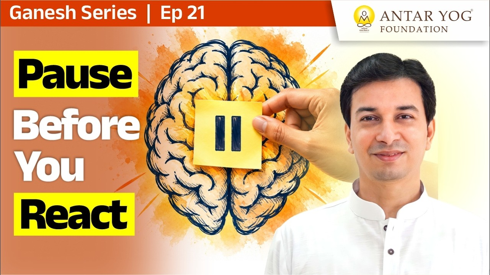

क्या आपने कभी गौर किया है कि जैसा हम देते हैं, वैसा ही लौटकर आता है? गीता में भगवान कहते हैं:
ये यथा मां प्रपद्यन्ते तांस्तथैव भजाम्यहम्।
(श्रीमद्भगवद्गीता ४.११)
जो मुझे जिस भाव से भजता है, मैं भी उसे उसी प्रकार भजता हूँ। पर क्या इसका अर्थ केवल "जैसे को तैसा" है? इस प्रवचन में इसी प्रश्न की गहराई खुलती है।
सामने वाला भी ब्रह्म है
पूरे विश्व में ब्रह्म (सर्वव्यापी परम सत्ता, the Absolute) ही है, वह शिव ही है।
तो आपके सामने जो खड़ा है, यदि आप उसे गाली दे रहे हैं, तो वह गाली आपने ब्रह्म को दी। फिर वह आपकी आरती नहीं उतारेगा, वह भी आपको गाली ही देगा।
यह पहला और सीधा अर्थ है: घर में आप चिल्लाए, तो सामने वाला भी चिल्लाएगा।
कहाँ चिल्लाना था, कहाँ चुप रहना था?
असली प्रश्न यह है कि हमें बोध (inner understanding) है या नहीं: कहाँ चिल्लाना उचित था और कहाँ नहीं।
यदि सामने गुरु चिल्ला रहे हैं, तो उलटकर चिल्लाना नहीं, चुप रहना चाहिए था। राजा चिल्ला रहा है, तो किसी कारण से: तूने कर की चोरी की है, कर नहीं भरता। उसे चिल्लाने का अधिकार है।
पिताजी ने डाँटा, तो बेटे को अच्छा नहीं लगेगा, यह स्वाभाविक है। पर डाँटना उचित था या नहीं, यह बोध से तय होगा। वह बोध, वह विवेक बुद्धि (discernment), गणपति देते हैं।
पिछली बार जब किसी ने आपको डाँटा, क्या आपने रुककर सोचा कि उसके पीछे कारण क्या था?
पहले क्षण में गुरु अच्छे नहीं लगते
गुरु का कठोर स्वरूप पहले क्षण में अच्छा लगता ही नहीं, यह पक्का है।
अर्जुन को भी पहले कृष्ण अच्छे नहीं लगते; कितनी शर्तें रखते हैं: यह कर, वह कर। चंद्रगुप्त को भी आचार्य चाणक्य पहले अच्छे नहीं लगते।
बाद में समझ आता है। जब भीतर गणपति जागृत होते हैं, तब समझ आता है।
क्या भगवान बदला लेते हैं?
तो क्या भगवान का न्याय किसी साधारण व्यक्ति जैसा है, कि तूने मारा इसलिए मैंने मारा? क्या वह कोई गुंडा है? नहीं।
भगवान का बाहरी स्वरूप वैसा ही हो सकता है जैसा आपका व्यवहार है, पर उनका भाव सदैव परमेश्वर का ही रहता है: आपका उद्धार (उत्थान और मुक्ति, liberation)।
आचार्य जी कहते हैं कि भगवान मानो कहते हैं, तू भाषण से नहीं समझता, लात खाकर ही समझता है, तो लात मारकर ही मैं तुझे सिखाऊँगा।
जो भाषा आपको समझ आती है, भगवान वही भाषा बोलते हैं। आप जिस स्वरूप से उन्हें नष्ट करने आए, वे उसी स्वरूप से कार्य करके आपका उद्धार करते हैं।
दुर्गा देवी: शस्त्र हाथ में, करुणा हृदय में
दुर्गा देवी युद्ध करती हैं, फिर शस्त्र फेंक देती हैं, फिर मुष्टि युद्ध होता है। देवता पूछते हैं: "आप संकल्प मात्र से उसे एक झटके में मार सकती हैं, तो इतना क्यों? उसे स्पर्श क्यों करने देती हैं? वह 'दुष्ट दुर्गे' कहकर आपका अपमान करता है, आप सुनती क्यों हैं?"
देवी का उत्तर सब बदल देता है: वे कहती हैं कि मैं माँ हूँ, और मैं उसे शत्रु देखती ही नहीं।
वे उसे एक, दो, तीन अवसर देती हैं कि वह सुधर जाए। "दुष्ट" शब्द पर उनका ध्यान ही नहीं जाता; वह "दुर्गे, दुर्गे, दुर्गे" बोलता है, तो उसका नाम-स्मरण हो रहा है।
स्पर्श इसलिए करने देती हैं कि उसकी स्पर्श दीक्षा (touch-initiation, जिसमें गुरु या देवी की ऊर्जा स्पर्श से प्रवाहित होती है) हो जाए। यह अंतिम अवसर है कि कम से कम वह मुक्त हो जाए। जितना वह देवी के चित्त में रहेगा, उसके सारे पाप धुल जाएँगे।
आरती में छिपा हुआ रहस्य
"दुर्गे दुर्घट भारी" की आरती हमने बार-बार की, गणपति उत्सव में भी। पर क्या यह भाव कभी पढ़ा?
मेरी दुर्गा ने शस्त्र धारण किए थे, लेकिन सामने वाले के उद्धार के लिए। यही है "जिस रूप में भजोगे, उस रूप में भजूँगा"। यह बदले का भाव नहीं, यह शत्रु भाव नहीं। दोनों में ज़मीन-आसमान का अंतर है।
जब आप किसी को कठोरता से जवाब देते हैं, तो भीतर भाव बदले का होता है या उसके भले का?
माँ का भाव: फल के आग्रह का त्याग
आचार्य जी कहते हैं कि कर्म करो और फल का हठ छोड़ दो।
मातृदेवो भव। पितृदेवो भव। आचार्यदेवो भव।
(तैत्तिरीय उपनिषद् १.११.२)
माता, पिता और आचार्य को देवता मानो। माँ अपनी सेवा का कितना बिल लगाती है, बताइए? माँ जो करती है, वही फल का त्याग है। यह स्थिति सर्वोच्च कही गई है।
मुख्य सीख
- पूरे विश्व में ब्रह्म है; सामने वाले को दिया गया व्यवहार ब्रह्म को दिया गया व्यवहार है, और वही लौटकर आता है।
- कहाँ प्रतिक्रिया देनी है और कहाँ चुप रहना है, यह बोध और विवेक बुद्धि से तय होता है, जो गणपति देते हैं।
- गुरु का कठोर रूप पहले अच्छा नहीं लगता, जैसे अर्जुन को कृष्ण और चंद्रगुप्त को चाणक्य; समझ बाद में आती है।
- भगवान का न्याय बदले का नहीं; बाहरी रूप आपके जैसा हो सकता है, पर भाव सदा उद्धार का होता है।
- दुर्गा देवी शत्रु को भी शत्रु नहीं देखतीं; माँ के रूप में अवसर, नाम-स्मरण और स्पर्श दीक्षा देकर उसे मुक्त करती हैं।
- कर्म करो, फल का हठ छोड़ो; माँ की तरह बिना हिसाब के देना ही सर्वोच्च स्थिति है।
